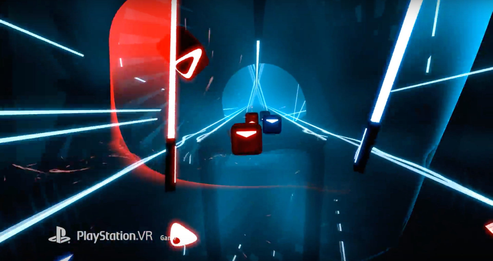
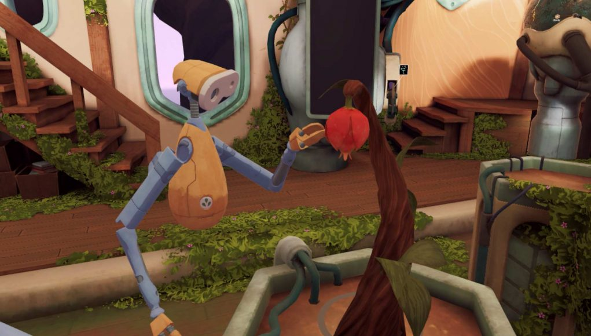

Game reviews for Virtual Reality
Beat Saber
Beat Saber is a VR rhythm game where you slash the beats of adrenaline-pumping music as they fly towards you, surrounded by a futuristic world. Set to music, the player will use two ‘lightsabers’ – one red and one blue, by default – to slice through blocks as they fly through space towards the player. The colour of the blocks – red or blue – correspond to which lightsaber to use, while directional arrows on each indicate whether you should slice up, down, left, right or even diagonally.
Job Simulator
In Job Simulator, you play as a human entering a simulated museum of what work was like before automation had taken over, or at least what the AI imagines human jobs to have been. There are four jobs to choose from, including office worker, gourmet chef, convenience store clerk, and auto mechanic. Once you select a job, you complete a series of tasks related to that job, using the Oculus Touch controllers to handle and interact with objects in the environment. This allows you to experience the different parts of the workforce without ever leaving the comfort of your own couch and headset.
The Last Clockwinder
The Last Clockwinder is casual puzzle game that tasks you with building moving contraptions out of your own clones. While constructing complex factories essentially populated by just yourself is good fun, the game also excels in delivering a world that feels alive, which isn’t an easy task when you’re basically (ok, not exactly) in one room the entire game with a bunch of automatons picking fruit and pumping levers. Thanks to its seemingly Studio Ghibli-inspired setting and series of audio logs which tie it all together with a heartfelt story, The Last Clockwinder makes for a charming little adventure that may just pull a heartstring or two.
Moss VR
Moss is a single-player action-adventure puzzle game from Polyarc tailor-made for the VR platform.
It takes classic components of a great game—such as compelling characters, gripping combat,
and captivating world exploration—and combines them with the exciting opportunities of VR.
In Moss, players meet Quill, a young mouse with dreams of greatness beyond the confines of her settlement.
While exploring the woods, she finds a mysterious Glass Relic and an ancient magic is awakened. With her uncle now in grave danger,
Quill must embark on an epic journey—and she needs you there by her side.